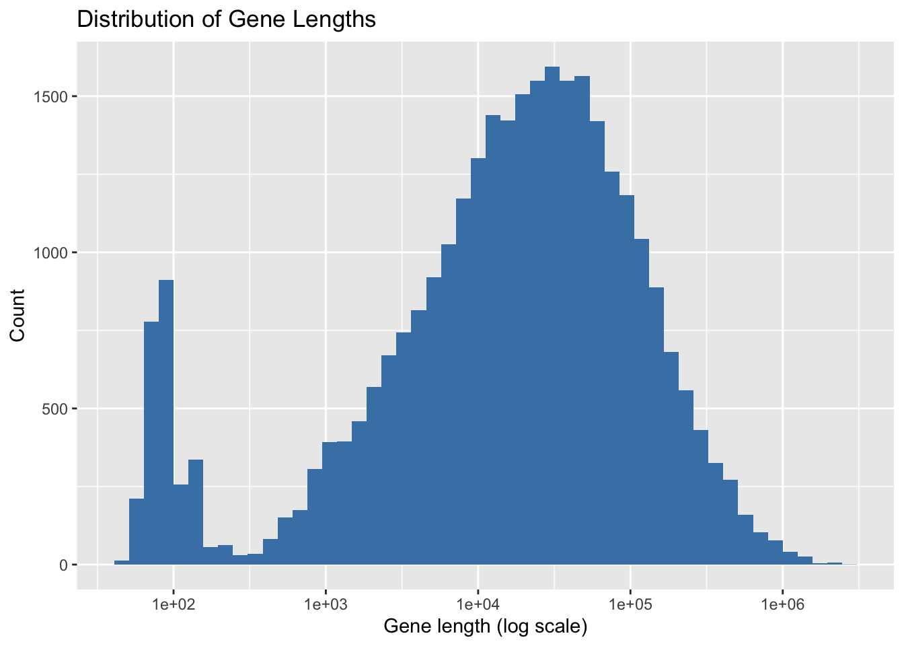

# Install necessary Bioconductor packages if not already installed
if (!requireNamespace("BiocManager", quietly = TRUE)) install.packages("BiocManager")
# Core Bioconductor packages
required_pkgs <- c(
"GenomicRanges", "plyranges", "AnnotationDbi",
"org.Hs.eg.db", "TxDb.Hsapiens.UCSC.hg38.knownGene", "ggplot2"
)
# Install missing packages
for (pkg in required_pkgs) {
if (!requireNamespace(pkg, quietly = TRUE)) BiocManager::install(pkg, ask = FALSE)
}
# Load packages
ll<-lapply(required_pkgs, library, character.only = TRUE, quietly = T)
library(GenomicRanges)
library(plyranges)
library(dplyr)Introduction to Bioconductor in R
📖 Introduction
This tutorial introduces Bioconductor, a powerful ecosystem of R packages designed for the analysis and visualization of high-throughput biological data. While the audience is already familiar with R, this guide will focus on foundational Bioconductor concepts, especially how to represent genomic ranges and explore gene annotations using Bioconductor’s tools.
📦 What is Bioconductor?
Bioconductor is an open-source project that develops and maintains R packages for the analysis of high-throughput biological data. Its main objective is to enable reproducible, scalable, and interoperable computational biology and bioinformatics workflows.
🔗 Project Information
- Website: https://bioconductor.org
- Initial Release: 2001
- Current Release: Bioconductor 3.21
- Compatible R Version: R 4.5.x
- Update Cycle: Two major releases per year (aligned with R releases)
- Core Team: Bioconductor Core Team at the Fred Hutchinson Cancer Center, Seattle
- Community: Open-source contributors, package developers, and end users from around the globe
Bioconductor ensures that all packages meet strict documentation, testing, and interoperability standards. It is ideal for tasks such as:
- RNA-seq and single-cell RNA-seq analysis
- Genomic range operations (e.g., ChIP-seq, ATAC-seq)
- Functional enrichment and pathway analysis
- Integrative omics (genomics, transcriptomics, epigenomics)
🧠 Why Use Bioconductor?
- 🔄 Designed for biology: Handles genomic coordinates, gene IDs, metadata, etc.
- 🧩 Interoperability: Shared data classes and standards make package integration seamless.
- 🔒 Reproducibility: Versioned releases and standardized documentation.
- 🌍 Community: Large, supportive ecosystem of tutorials, forums, and conferences (e.g., BioC Asia, BioC Europe).
🔧 What Are Core Bioconductor Packages?
Core Bioconductor packages are foundational tools that provide standardized infrastructure and functionality used across many other packages. These include:
BiocGenerics– Generic functions shared across BioconductorS4Vectors– Provides S4 vector infrastructureIRangesandGenomicRanges– Efficient handling of genomic intervalsAnnotationDbi– Framework for working with annotation databasesSummarizedExperiment– Container for assay + metadata integration
These core packages are maintained by the Bioconductor core team and serve as building blocks for downstream analysis workflows. They ensure consistency, interoperability, and performance across the Bioconductor ecosystem.
🧰 Bioconductor Package Ecosystem
Some of the most widely used categories include:
- 🧬 RNA-seq:
DESeq2,edgeR,limma - 🧠 Functional Analysis:
clusterProfiler,ReactomePA,topGO - 🧬 Annotation Access:
biomaRt,AnnotationHub,org.*,TxDb.* - 🧫 Single-cell:
Seurat,SingleCellExperiment,scran - 🧮 Data Containers:
SummarizedExperiment,SingleCellExperiment - 📊 Visualization:
ComplexHeatmap,ggbio,Gviz
🧬 Representing Genomic Ranges with GRanges and plyranges
Bioconductor uses the GRanges class (from GenomicRanges) to represent genomic intervals. The plyranges package provides a dplyr-like grammar for working with these ranges.
gr <- GRanges(
seqnames = c("chr1", "chr1", "chr2"),
ranges = IRanges(start = c(100, 150, 500), end = c(200, 400, 550)),
strand = c("+", "-", "+")
)
grGRanges object with 3 ranges and 0 metadata columns:
seqnames ranges strand
<Rle> <IRanges> <Rle>
[1] chr1 100-200 +
[2] chr1 150-400 -
[3] chr2 500-550 +
-------
seqinfo: 2 sequences from an unspecified genome; no seqlengths# Add a metadata column and mutate
gr <- as_granges(gr) %>%
mutate(score = width) %>%
arrange(dplyr::desc(score))
# Use plyranges to filter ranges
as_granges(gr) %>%
filter(score > 75)GRanges object with 2 ranges and 1 metadata column:
seqnames ranges strand | score
<Rle> <IRanges> <Rle> | <integer>
[1] chr1 150-400 - | 251
[2] chr1 100-200 + | 101
-------
seqinfo: 2 sequences from an unspecified genome; no seqlengths# Reduce overlapping ranges
as_granges(gr) %>%
reduce_ranges()GRanges object with 2 ranges and 0 metadata columns:
seqnames ranges strand
<Rle> <IRanges> <Rle>
[1] chr1 100-400 *
[2] chr2 500-550 *
-------
seqinfo: 2 sequences from an unspecified genome; no seqlengths# Find overlaps with a new set
gr2 <- GRanges(
seqnames = c("chr1", "chr2"),
ranges = IRanges(c(180, 520), c(220, 560))
)
join_overlap_inner(as_granges(gr), as_granges(gr2))GRanges object with 3 ranges and 1 metadata column:
seqnames ranges strand | score
<Rle> <IRanges> <Rle> | <integer>
[1] chr1 150-400 - | 251
[2] chr1 100-200 + | 101
[3] chr2 500-550 + | 51
-------
seqinfo: 2 sequences from an unspecified genome; no seqlengthsVisual Aid for GRanges joins
# join_overlap_inner
gr1: |======| (100–200)
gr2: |======| (150–250)
result: |====| (150–200)
# join_overlap_left
gr1: |======| (100–200)
gr2: |======| (150–250)
result: |======| (100–200)
# join_overlap_right
gr1: |======| (100–200)
gr2: |======| (150–250)
result: |======| (150–250)
# join_overlap_inner
gr1: |====| (100–200)
gr2: |====| (180–220)
Overlap: |=| (180–200)
# join_overlap_inner (no overlap)
gr1: |======| (100–140)
gr2: |======| (160–200)
result: <empty>
# join_overlap_full
gr1: |======| (100–200)
gr2: |======| (150–250)
result: |======| + (100–200)
+ |======| (150–250)🧭 Gene Annotation Using OrgDb
What is an OrgDb?
An OrgDb is a type of annotation package in Bioconductor that provides curated gene-level annotations for a specific organism. These databases include mappings between various biological identifiers, such as gene symbols, Entrez IDs, Ensembl IDs, GO terms, chromosome locations, and gene product names.
The human OrgDb package is org.Hs.eg.db.
library(org.Hs.eg.db)You can explore available key types:
keytypes(org.Hs.eg.db) [1] "ACCNUM" "ALIAS" "ENSEMBL" "ENSEMBLPROT" "ENSEMBLTRANS"
[6] "ENTREZID" "ENZYME" "EVIDENCE" "EVIDENCEALL" "GENENAME"
[11] "GENETYPE" "GO" "GOALL" "IPI" "MAP"
[16] "OMIM" "ONTOLOGY" "ONTOLOGYALL" "PATH" "PFAM"
[21] "PMID" "PROSITE" "REFSEQ" "SYMBOL" "UCSCKG"
[26] "UNIPROT" Common types include: - SYMBOL: gene symbols (e.g., “TP53”) - ENTREZID: NCBI Entrez Gene IDs - ENSEMBL: Ensembl gene IDs - GENENAME: Full gene name
You can also see what columns (annotations) you can retrieve:
columns(org.Hs.eg.db) [1] "ACCNUM" "ALIAS" "ENSEMBL" "ENSEMBLPROT" "ENSEMBLTRANS"
[6] "ENTREZID" "ENZYME" "EVIDENCE" "EVIDENCEALL" "GENENAME"
[11] "GENETYPE" "GO" "GOALL" "IPI" "MAP"
[16] "OMIM" "ONTOLOGY" "ONTOLOGYALL" "PATH" "PFAM"
[21] "PMID" "PROSITE" "REFSEQ" "SYMBOL" "UCSCKG"
[26] "UNIPROT" This includes: - CHR: chromosome - GO: Gene Ontology terms - KEGG: KEGG pathway IDs - PFAM: protein domains - UNIPROT: UniProt identifiers
Example 1: Creating a Gene Annotation Table
library(AnnotationDbi)
# Retrieve annotation for a set of gene symbols
genes <- AnnotationDbi::select(
org.Hs.eg.db,
keys = c("TP53", "EGFR", "BRCA1"),
columns = c("SYMBOL", "GENENAME", "ENSEMBL", "ENTREZID", "CHR"),
keytype = "SYMBOL"
)Warning in .deprecatedColsMessage(): Accessing gene location information via 'CHR','CHRLOC','CHRLOCEND' is
deprecated. Please use a range based accessor like genes(), or select()
with columns values like TXCHROM and TXSTART on a TxDb or OrganismDb
object instead.'select()' returned 1:1 mapping between keys and columnsgenes SYMBOL GENENAME ENSEMBL ENTREZID CHR
1 TP53 tumor protein p53 ENSG00000141510 7157 17
2 EGFR epidermal growth factor receptor ENSG00000146648 1956 7
3 BRCA1 BRCA1 DNA repair associated ENSG00000012048 672 17Example 2: Retrieve GO Term Annotations
go_annot <- AnnotationDbi::select(
org.Hs.eg.db,
keys = c("TP53", "EGFR", "BRCA1"),
columns = c("SYMBOL", "GO", "ONTOLOGY"),
keytype = "SYMBOL"
)'select()' returned 1:many mapping between keys and columnsgo_annot %>% head() SYMBOL GO EVIDENCE ONTOLOGY
1 TP53 GO:0000122 IDA BP
2 TP53 GO:0000122 ISS BP
3 TP53 GO:0000423 IEA BP
4 TP53 GO:0000785 IDA CC
5 TP53 GO:0000785 IMP CC
6 TP53 GO:0000785 ISA CCThis table links gene symbols to Gene Ontology IDs and their categories (BP, MF, CC).
Example 3: Retrieve KEGG Pathway Annotations
kegg_annot <- AnnotationDbi::select(
org.Hs.eg.db,
keys = c("TP53", "EGFR", "BRCA1"),
columns = c("SYMBOL", "PATH"),
keytype = "SYMBOL"
)'select()' returned 1:many mapping between keys and columnskegg_annot %>% head() SYMBOL PATH
1 TP53 04010
2 TP53 04110
3 TP53 04115
4 TP53 04210
5 TP53 04310
6 TP53 04722This returns KEGG pathway identifiers associated with each gene.
🧱 Building Annotation Tables for Genes, Transcripts, Exons, Introns
library(TxDb.Hsapiens.UCSC.hg38.knownGene)
txdb <- TxDb.Hsapiens.UCSC.hg38.knownGene
# Extract genes, transcripts, exons
gene_ranges <- genes(txdb) 2162 genes were dropped because they have exons located on both strands
of the same reference sequence or on more than one reference sequence,
so cannot be represented by a single genomic range.
Use 'single.strand.genes.only=FALSE' to get all the genes in a
GRangesList object, or use suppressMessages() to suppress this message.transcript_ranges <- transcripts(txdb)
exon_ranges <- exons(txdb)
# Calculate introns from transcripts and exons
intron_ranges <- intronsByTranscript(txdb, use.names = TRUE)📊 Plot Distribution of Gene Lengths
library(ggplot2)
gene_df <- as.data.frame(gene_ranges)
gene_df$length <- gene_df$end - gene_df$start + 1
ggplot(gene_df, aes(x = length)) +
geom_histogram(bins = 50, fill = "steelblue") +
scale_x_log10() +
labs(title = "Distribution of Gene Lengths", x = "Gene length (log scale)", y = "Count")
💡 Summary
In this first lecture, we: - Introduced Bioconductor and its purpose - Used GRanges and plyranges for genomic interval manipulation, including filtering, reducing, joining, and mutating ranges - Introduced OrgDb and thoroughly explored org.Hs.eg.db, its key types and annotation columns - Demonstrated how to retrieve GO and KEGG annotations using AnnotationDbi::select() - Built annotation tables for genes, transcripts, exons, and introns using a TxDb - Visualized the distribution of gene lengths
Next, we will explore functional annotations, such as GO terms and pathway mapping using clusterProfiler and biomaRt.
📚 Resources
- https://bioconductor.org
- plyranges package
- org.Hs.eg.db documentation
- TxDb.Hsapiens.UCSC.hg38.knownGene
✨ Acknowledgements
Thanks to the R and Bioconductor communities for building and maintaining robust tools and documentation for genomics research.